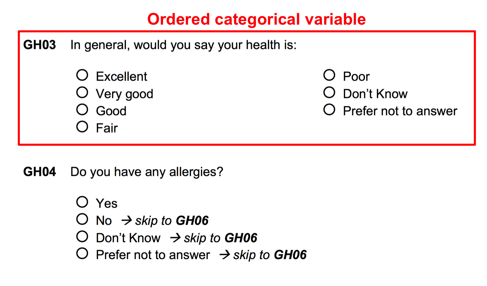
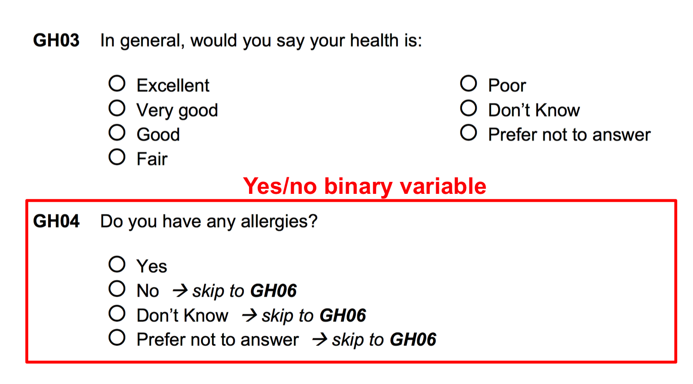
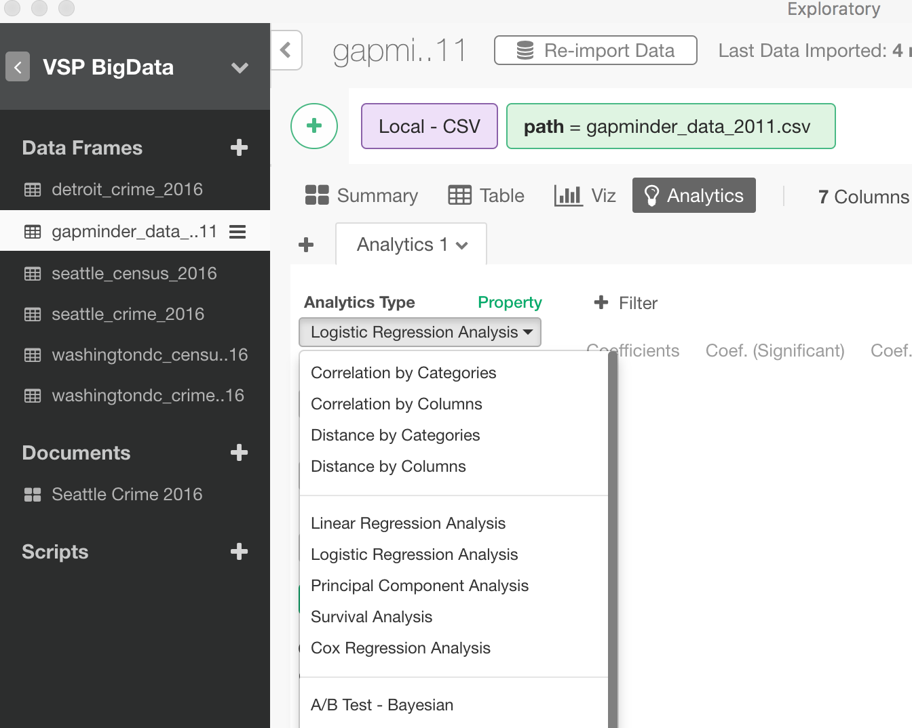

Urban Big Data Analytics
Lecture 10
Advanced Modeling
August 1, 2018
Instructor: Andy Hong, PhD
Postdoctoral Research and Teaching Fellow
School of Population and Public Health
University of British Columbia
Final group project
- Five elements: 1. Problem; 2. Hypotheses; 3. Data and methods; 4. Results and Interpretation; 5. Conclusions
- Minimum 6 page, single space, Times New Roman 12 font size
- August 8 (Weds), 12:00 Midnight
Tomorrow's Schedule
| Time |
Event Description |
|
9:00am - 12:00pm
|
Regular lecture
|
|
1:30am - 4:00pm
|
Group project presentation
|
|
4:00pm - 5:00pm
|
Special mixer event
|
Final group presentation
- Tomorrow afternoon at 1:30pm
- Presentation (15 mins), Q&A (5 mins)
- Each group member needs to present
- Share some preliminary results
Special mixer event (4:00pm)
Beyond linear regressions
- Linear models are good for numbers
- But, what about categorical data?
- What about survey data with yes or no questions?
- Can you convert categories into numbers?
Survey questionaires


Logistic Regression
- "Logit" regression
- "Logit" model
- Developed by David Cox in 1958
- Regression model for categorical outcome Y
Why Logistic Regression?
- Linear model, not appropriate for a qualitative response
- Ex) Question - How would you rate this course?
- Aweful - Okay - Good - Very Good - Excellent
- Can we turn this into 1-2-3-4-5?
- No, because the distance between each item is not the same
Types of Logistic Regression
- Simple logistic model
- Binary outcome: "0" and "1"
- Pass/Fail, Win/Lose, Dead/Alive, Sick/Healthy
- Multinomial logistic model
- Multiple categorical outcomes
- A range of values: Unsatisfied - Satisfied - Very Satisfied
Linear vs. Logistic Regression
| Linear function |
Logistic function |
|
$$ P(Y) = \beta_{0} + \beta_{1}x $$
|
$$ P(Y=1) = \frac{\exp(\beta_{0} + \beta_{1}x)}{1 + \exp(\beta_{0} + \beta_{1}x)} $$
$$ ln(\frac{p}{1-p}) = \beta_{0} + \beta_{1}x $$
|
Simple Logistic Regression
$$ corruption \approx f(income) $$
# Simple Logit Model
m1 = glm(data = gapminder,
corruption ~ income,
family = "binomial")
exp(coef(m1))
confint(m1)
Multiple Logistic Regression
$$ corruption \approx f(income, population, democracy) $$
# Multiple Logit Model
m2 = glm(data = gapminder,
corruption ~ income + population + democracy,
family = "binomial")
exp(coef(m2))
confint(m2)
(Optional)

You can build the models in Exploratory!